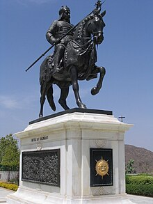

Pratap Singh born on 9 May 1540 popularly known as Maharana Pratap, was a king of Mewar, a region in north-western India in the present-day state of Rajasthan. He is notable for leading the Rajput resistance against the expansionist policy of the Mughal Emperor Akbar including the Battle of Haldighati and Battle of Dewair which have turned him into a folk hero. Maharana Pratap was born to Udai Singh II of Mewar and Jaiwanta Bai in 1540, the year in which Udai Singh ascended to the throne after defeating Vanvir Singh. His younger brothers were Shakti Singh, Vikram Singh and Jagmal Singh. Pratap also had two stepsisters: Chand Kanwar and Man Kanwar. His chief consort was Maharani Ajabde Bai Punwar of Bijolia. Their eldest son was Amar Singh I. He belonged to the Royal family of Mewar. After the death of Udai Singh in 1572, Rani Dheer Bai Bhatiyani wanted her son Jagmal to succeed him but senior courtiers preferred Pratap, as the eldest son, to be their king. The desire of the nobles prevailed and Pratap ascended the throne as Maharana Pratap, the 54th ruler of Mewar in the line of the Sisodia Rajputs. He was crowned in Gogunda on the auspicious day of Holi. Jagmal swore revenge and left for Ajmer, to join the armies of Akbar, and obtained the town of Jahazpur as a Jagir as a gift in return for his help.
Battles fought

The status of Maharana Pratap
Battle of Haldighati (1576) – Maharana Pratap defeated by Akbar.
Battle of Dewair (1582) - Maharana Pratap fought against Akbar’s Mughals army and defeated them 36,000 mughals surrendered.
Battle of Dewair (1606) - Fought in a valley 40 km from Kumbalgarh. Rana Amar Singh defeated and killed Sultan Khan, the Mughal prince Muhammad Parviz fled from the battlefield with his commander Asaf Khan.
Second Mughal Invasion of Marwar (1679-1707) - Aurangzeb took Marwar under his direct control after the death of Maharaja Jaswant Singh. The Rathore army under Durgadas Rathore carried out a relentless struggle against the occupying forces. In 1707 after the death of Aurangzeb, Durgadas defeated the local Mughal force and reoccupied Jodhpur and their lost territories.
Battle of Udaipur (1680) - Aurangzeb attacked Mewar and plundered Udaipur, the citizens were safely escorted to the aravalli hills by Rana Raj Singh but 63 temples in and around Udaipur were plundered and many villages were burned down by Aurangzeb’s general Taj Khan. The Mughal army was eventually starved out of Mewar because of the scorched earth techniques and guerrilla warfare used by the Rana. Aurangzeb after a failed campaign left Mewar to his son Akbar and retreated to Ajmer.
Resources
Learn more about the legendary king of our beloved India.